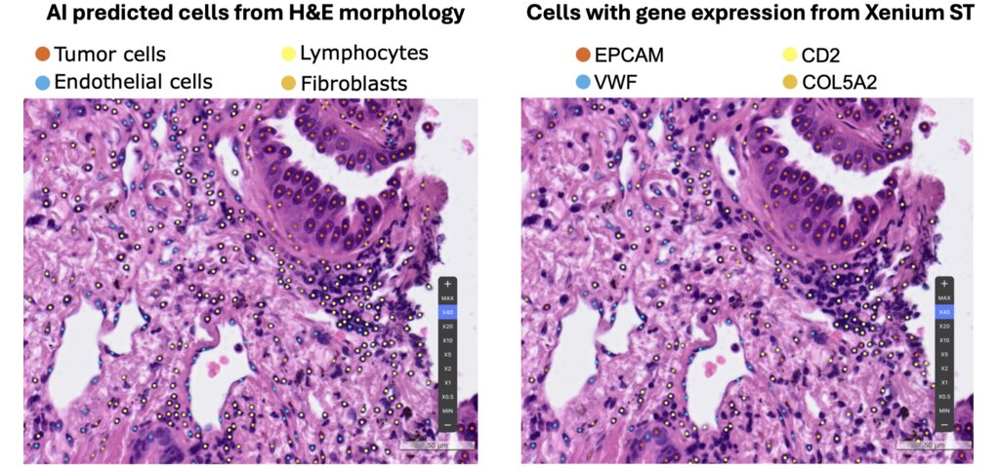
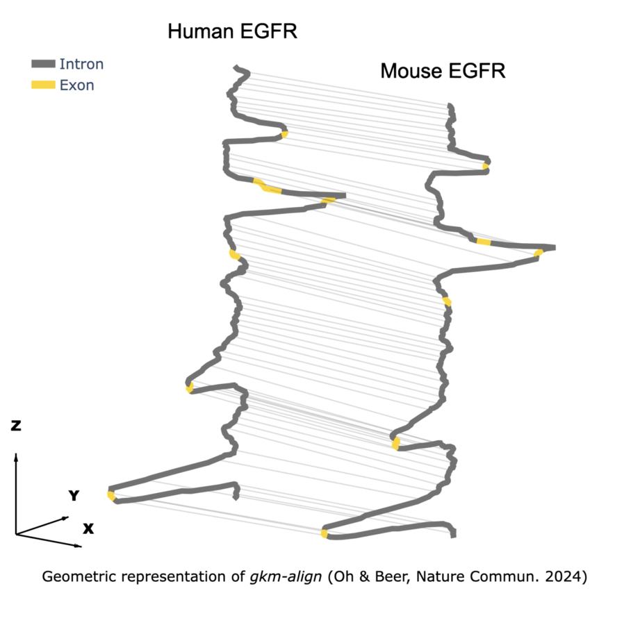
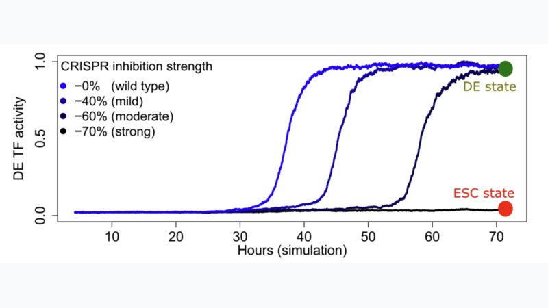

Research Highlights
Click a card to open.



{kind=link}
Digital pathology AI (JITC 2025)
Integrating morphology and spatial transcriptomics for tumor microenvironment profiling.
Geometric modeling of genome evolution (Nature Commun. 2024)
Identifying optimal alignment paths in gapped-kmer feature space (gkm-align).
{kind=link}
Gene regulatory dynamics in cell-state transitions (Nature Genetics 2023)
Simulating embryonic stem cell (ESC)→definitive endoderm (DE) transition dynamics under CRISPR enhancer perturbation.
Experience
-
Scientist, Lunit Inc.
Jun 2024 – Present- Developing multimodal computational frameworks for precision oncology, integrating histology and molecular data across large patient cohorts.
- Developed a morphology-guided spatial transcriptomics framework (H&E + ST) to decode the tumor microenvironment and mechanisms of therapeutic resistance (presented at AACR 2025).
-
Graduate Student Researcher, Johns Hopkins University (Poster)
Sep 2018 – May 2024- Recipient of the Mette Strand Young Investigator Award for outstanding research at Johns Hopkins School of Medicine.
- Developed gkm-align, a regulatory genome aligner, deriving its mathematical formulation and implementing the core SIMD-accelerated C++ computational kernel (Math, GitHub).
- Characterized the evolutionary dynamics of the regulatory genome using sequence modeling across >1,000 ENCODE DNase-seq experiments (Nature Commun. 2024).
- Collaborated through the ENCODE/IGVF consortia to model gene regulatory networks using large-scale CRISPRi perturbation screens (Nature Genetics 2023; Nature Methods 2024).
Education
-
Ph.D. in Biomedical Engineering, Johns Hopkins University (Thesis)
2018 – 2024 -
M.S. in Biomedical Engineering, Johns Hopkins University
2017 – 2018 -
B.S. Biomedical Engineering & Applied Mathematics and Statistics, Johns Hopkins University
2013 – 2017
Awards & Honors
- The Mette Strand Young Investigator Award, Johns Hopkins School of Medicine, 2024.
- Reviewer's Choice Top Abstract Award, American Society of Human Genetics, 2023.
- IGVF Consortium Poster Award, IGVF Consortium, 2022.
- ENCODE Consortium Team Science Award, ENCODE Consortium, 2022.
- David T. Yue Memorial Award for Teaching Excellence, Johns Hopkins University, 2017.
Skills
Algorithm Development & Machine Learning
Bioinformatic algorithm and machine learning
(GitHub)
Computer vision & AI for characterizing the tumor microenvironment (JITC 2025)
Computer vision & AI for characterizing the tumor microenvironment (JITC 2025)
Programming
Python, C++ (Low-level Optimization, AVX2 SIMD Intrinsics, Multi-threading), R, Bash / Shell Scripting
Leadership & Service
- Review Editor, Frontiers in Epigenetics and Epigenomics Nov 2024 – Present (Loop Profile)
- Teaching Assistant, Johns Hopkins University Sep 2016 – Dec 2022 — Instructed quantitative courses (Statistical Mechanics & Thermodynamics, Discrete Math, Sequence Analysis (Computational Genomics), Biomedical Data Science).
- President, Korean Graduate Student Association (KGSA), Johns Hopkins University Sep 2019 – Jun 2020 (Article)
Interviews
Publications
(* denotes co–first authors who contributed equally)
(•• papers highlighted as "of outstanding interest" in Curr. Opin. Genet. Dev.)
Selected publications
- ••Jin Woo Oh & Michael A Beer. "Gapped-kmer sequence modeling robustly identifies regulatory vocabularies and distal enhancers conserved between evolutionarily distant mammals." Nature Communications (2024)
- ••Renhe Luo, Jielin Yan, Jin Woo Oh, Wang Xi, Dustin Shigaki, Wilfred Wong, Hyein S Cho, Dylan Murphy, Ronald Cutler, Bess P Rosen, Julian Pulecio, Dapeng Yang, Rachel A Glenn, Tingxu Chen, Qing V Li, Thomas Vierbuchen, Simone Sidoli, Effie Apostolou, Danwei Huangfu, Michael A Beer. "Dynamic network-guided CRISPRi screen identifies CTCF-loop-constrained nonlinear enhancer gene regulatory activity during cell state transitions." Nature Genetics (2023)
- Yeong Hak Bang*, Geun-Ho Park*, Jin Woo Oh*, Soohyun Hwang, Jun-Gi Jeong, Boram Lee, Cheol Yong Joe, Hyemin Kim, Jinyong Kim, Sehhoon Park, Hyun Ae Jung, Jong-Mu Sun, Jin Seok Ahn, Myung-Ju Ahn, Yoon-La Choi, Chang Ho Ahn, Siraj M. Ali, Chan-Young Ock, Se-Hoon Lee. "Artificial intelligence-powered spatial analysis of tumor microenvironment in patients with non-small cell lung cancer with acquired resistance to EGFR tyrosine kinase inhibitor." Journal for ImmunoTherapy of Cancer (2025)
- David Yao*, Josh Tycko*, Jin Woo Oh*, Lexi R Bounds*, Sager J Gosai*, Lazaros Lataniotis*, Ava Mackay-Smith, Benjamin R Doughty, Idan Gabdank, Henri Schmidt, Tania Guerrero-Altamirano, Keith Siklenka, Katherine Guo, Alexander D. White, Ingrid Youngworth, Kalina Andreeva, Xingjie Ren, Alejandro Barrera, Yunhai Luo, Galip Gürkan Yardımcı, Ryan Tewhey, Anshul Kundaje, William J Greenleaf, Pardis C Sabeti, Christina Leslie, Yuri Pritykin, Jill E Moore, Michael A Beer, Charles Gersbach, Timothy E Reddy, Yin Shen, Jesse M Engreitz, Michael C Bassik, Steven K Reilly. "Multicenter integrated analysis of noncoding CRISPRi screens." Nature Methods (2024)
Johns Hopkins (2018–2024)
- ••Jin Woo Oh & Michael A Beer. "Gapped-kmer sequence modeling robustly identifies regulatory vocabularies and distal enhancers conserved between evolutionarily distant mammals." Nature Communications (2024)
- David Yao*, Josh Tycko*, Jin Woo Oh*, Lexi R Bounds*, Sager J Gosai*, Lazaros Lataniotis*, Ava Mackay-Smith, Benjamin R Doughty, Idan Gabdank, Henri Schmidt, Tania Guerrero-Altamirano, Keith Siklenka, Katherine Guo, Alexander D. White, Ingrid Youngworth, Kalina Andreeva, Xingjie Ren, Alejandro Barrera, Yunhai Luo, Galip Gürkan Yardımcı, Ryan Tewhey, Anshul Kundaje, William J Greenleaf, Pardis C Sabeti, Christina Leslie, Yuri Pritykin, Jill E Moore, Michael A Beer, Charles Gersbach, Timothy E Reddy, Yin Shen, Jesse M Engreitz, Michael C Bassik, Steven K Reilly. "Multicenter integrated analysis of noncoding CRISPRi screens." Nature Methods (2024)
- ••Renhe Luo, Jielin Yan, Jin Woo Oh, Wang Xi, Dustin Shigaki, Wilfred Wong, Hyein S Cho, Dylan Murphy, Ronald Cutler, Bess P Rosen, Julian Pulecio, Dapeng Yang, Rachel A Glenn, Tingxu Chen, Qing V Li, Thomas Vierbuchen, Simone Sidoli, Effie Apostolou, Danwei Huangfu, Michael A Beer. "Dynamic network-guided CRISPRi screen identifies CTCF-loop-constrained nonlinear enhancer gene regulatory activity during cell state transitions." Nature Genetics (2023)
- IGVF Consortium. "Deciphering the impact of genomic variation on function." Nature (2024)
- Jin Woo Oh. "Enhanced Algorithms to detect and characterize conserved regulatory sequences." Johns Hopkins University (2024)
Lunit (2024–Present)
- Yeong Hak Bang*, Geun-Ho Park*, Jin Woo Oh*, Soohyun Hwang, Jun-Gi Jeong, Boram Lee, Cheol Yong Joe, Hyemin Kim, Jinyong Kim, Sehhoon Park, Hyun Ae Jung, Jong-Mu Sun, Jin Seok Ahn, Myung-Ju Ahn, Yoon-La Choi, Chang Ho Ahn, Siraj M. Ali, Chan-Young Ock, Se-Hoon Lee. "Artificial intelligence-powered spatial analysis of tumor microenvironment in patients with non-small cell lung cancer with acquired resistance to EGFR tyrosine kinase inhibitor." Journal for ImmunoTherapy of Cancer (2025)
- Jozef P. Bossowski, Ray Pillai, John Kilian, Angela Wong Lau, Mari Nakamura, Ali Rashidfarrokhi, Yuan Hao, Ruxuan Li, Katherine Wu, Takamitsu Hattori, Eliezra Glasser, Akiko Koide, Lidong Wang, Andre L. Moreira, Cristina Hajdu, Sahith Rajalingam, Sarah E. LeBoeuf, Hortense Le, Seungeun Lee, Jin Woo Oh, Cheolyong Joe, Hyemin Kim, Chan-Young Ock, Se-Hoon Lee, Hao Wang, Angana A. H. Patel, Volkan I. Sayin, Aristotelis Tsirigos, Kwok-Kin Wong, Sergei B. Koralov, Mario Pende, Francisco J. Sánchez-Rivera, Diane M. Simeone, Ioannis K. Zervantonakis, Shohei Koide & Thales Papagiannakopoulos. "The integrated stress response promotes immune evasion through lipocalin 2." Nature (2026)
- Hyunchul Kim, Jinhyung Heo, Soo Ick Cho, Beodeul Kang, Jung Sun Kim, Chan Kim, Chang Il Kwon, Min Je Sung, Seok-Pyo Shin, Seok Jeong Yang, Incheon Kang, Sung Hwan Lee, Chansik An, Seungeun Lee, Jin Woo Oh, Hee Yeon Kay, Jiwon Shin, Taebum Lee, Sanghoon Song, Sukjun Kim, Heon Song, Sergio Pereira, Gwangil Kim, Hong Jae Chon. "Pathologist-Artificial Intelligence Concordance in HER2 Interpretation for Advanced Biliary Tract Cancer: Intraobserver, Interobserver, and Human-Artificial Intelligence Variability." Laboratory Investigation (2025)
- Gwangil Kim, Beodeul Kang, Jung Yong Hong, Haeyoun Kang, Jung Sun Kim, Sohyun Hwang, Sung Hwan Lee, Sang Hoon Jung, Chansik An, Won Suk Lee, Chiyoon Oum, Gahee Park, Mingu Kang, Yoojoo Lim, Jin Woo Oh, Siraj M. Ali, Chan-Young Ock, Chan Kim, Ho Yeong Lim, Hong Jae Chon. "Differential implications of tumor endothelial cell and lymphocyte densities in advanced hepatocellular carcinoma patients treated with immunotherapy." npj Precision Oncology (2025)
Published Abstracts
- Jin Woo Oh, Sanghoon Song, Soohyun Hwang, Mingu Kang, Jinhee Lee, Sergio Pereira, Hyunsu Kim, Sehhoon Park, Junhun Cho, Se-Hoon Lee, Han-Sin Jeong, Chang Ho Ahn, Siraj M Ali, Chan-Young Ock, Myung-Ju Ahn. "A novel single-cell level approach integrating artificial intelligence (AI)–powered histomorphology labeling and spatial transcriptomics enables biomarker identification of treatment resistance in salivary gland cancer (SGC)." Proceedings of the AACR (2025)
- Hyunsu Kim, Sehhoon Park, Jin Woo Oh, Soohyun Hwang, Jinyoung Kim, Eun-hye Kim, Nayeon Choi, Junhun Cho, Hyun-Ae Jung, Dongryul Oh, Se-Hoon Lee, Yong Chan Ahn, Han-Sin Jeong, Chang Ho Ahn, Chan-Young Ock, Myung-Ju Ahn. "Exploratory analysis of tumor microenvironment using scRNA, scTCR, and spatial transcriptomics in salivary gland cancer with surgical sample after neoadjuvant immuno-chemotherapy." Proceedings of the AACR (2025)
- Seungeun Lee, Jin Woo Oh, Soohyun Hwang, Jeanne Shen, Sehhoon Park, Hyojin Kim, Young Kwang Chae, Se-Hoon Lee, Yoon-La Choi, Jin-haeng Chung, Jaewoong Shin, Heon Song, Aaron Valero Puche, Donggeun Yoo, Taebum Lee, Chiyoon Oum, Jeongmi Kim, Siraj M Ali, Chan-Young Ock. "Deep learning–powered H&E whole-slide image analysis of endothelial cells to characterize tumor vascular environment and correlate treatment outcome to immunotherapy." Journal of Clinical Oncology (2025)
Poster Presentations
Johns Hopkins (2018–2024)
- "Functional characterization of the mammalian genome." ASHG, 2023.
- "Gapped-kmer based machine learning and sequence alignment identify conserved regulatory vocabularies and enhancers in evolutionarily distant mammals." IGVF Consortium Meeting, 2022.
- "Identifying subsets of cell-specific regulatory sequence features from heterogeneous tissue-specific chromatin state data using predictive gapped k-mer features." Cold Spring Harbor Lab – Biology of Genomes, 2019.
- "Identifying subsets of cell-specific regulatory sequence features from heterogeneous tissue-specific chromatin state data using predictive gapped k-mer features." ENCODE Consortium Meeting, 2019.
Lunit (2024–Present)
- "A novel single-cell level approach integrating AI–powered histomorphology labeling and spatial transcriptomics enables biomarker identification of treatment resistance in salivary gland cancer (SGC)." AACR, 2025.
Invited Talks
- “Multi-center integrative analysis of non-coding CRISPR screens.” ENCODE Consortium Meeting, 2022.
- “Sequence alignment using gapped-kmer features identifies conserved orthologous mammalian enhancers with high precision.” ENCODE Consortium Meeting, 2021.